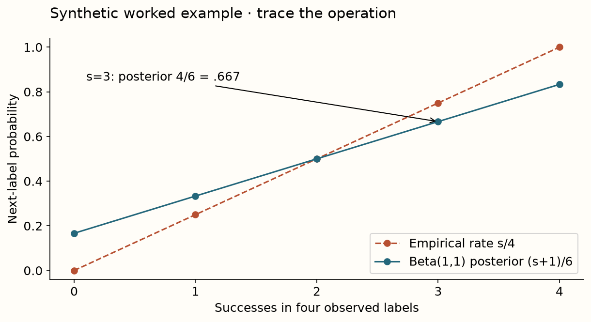
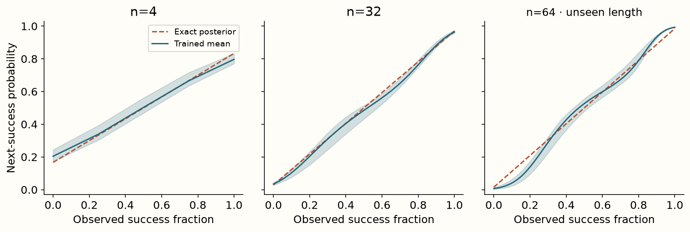

Year 2 · Quarter 3 · Lesson 061
Learn Bayesian prediction across tasks
Understand the computation. Challenge the evidence. Produce a defensible result.
Core reading: 35–50 minutes. Lab: 45–75 minutes plus declared experiment time. This sequence builds the strong single-table baseline and information discipline required to test the relational thesis.
Retrieve before reading
Without notes: Must a learned posterior approximation extrapolate beyond its training context sizes? Explain why, then recall a related failure mode from an older lesson.
Learn an inference procedure¶
A conventional classifier learns one mapping from features to labels on one training dataset. A prior-data fitted network (PFN) learns across many sampled supervised-learning tasks. Its input includes a new task's labeled context and an unlabeled query. Its output approximates the label distribution implied by the prior and that context. Read Müller et al., Sections 2–3.
Separate three objects: the prior over tasks, the distribution of examples within a task, and the neural weights shared across tasks. During pretraining, gradients update those weights. At ordinary in-context inference, the weights are fixed; context examples alter the computation and therefore the answer. Calling the latter “no training” is shorthand for no downstream parameter optimization, not zero learning cost or no use of labels.
Derive a posterior you can check exactly¶
Let a task be an unknown coin probability theta. Draw theta from a Beta distribution with positive shape parameters alpha and beta. Conditional on theta, each observed label is a Bernoulli draw: 1 with probability theta, otherwise 0. For a context with s successes and f failures, multiplying the prior density by its likelihood gives exponents alpha+s−1 and beta+f−1. The posterior is therefore Beta(alpha+s, beta+f).
To predict the next label, integrate over this posterior instead of plugging in one fitted theta. The next-success probability is (alpha+s)/(alpha+beta+s+f). For a uniform Beta(1,1) prior and labels [1,0,1], the prediction is 3/5=.6. The empirical success rate is 2/3; the Bayesian answer shrinks it toward the prior mean .5. With no observations, it returns the prior mean. More observations reduce the prior's relative contribution.
The output .5 alone does not distinguish a well-known fair coin from uncertainty between nearly deterministic coins. A posterior predictive probability mixes uncertainty about the task with randomness within it. If you need a posterior distribution over theta, that is a different output contract.

Why query-label loss learns the Bayesian answer¶
Sample a task, draw context labels and draw an independent query label from the same task. Train a network to predict the query from the context using binary cross-entropy, −y log(q)−(1−y)log(1−q). Conditional on a particular context, let p be the true posterior predictive probability. Expected query loss is −p log(q)−(1−p)log(1−q).
Differentiating with respect to q gives −p/q+(1−p)/(1−q), which vanishes at q=p. Equivalently, expected log loss is the true predictive entropy plus a nonnegative KL divergence between the true prediction and the model's prediction. Finite capacity, optimization and the sampled training distribution determine how closely a neural network reaches that optimum. The theorem does not say an arbitrary trained Transformer has become an exact Bayesian engine for every real table.
The context and query must share the same sampled theta. If you redraw theta for the query, context labels contain no information about it; the best predictor collapses to the prior mean. The lab asks you to construct this broken generator as a negative control.
Model architecture: isolate the PFN objective¶
The local CountPFN uses the exact sufficient statistics [successes, failures], divides them by 32, and passes them through 2→32→32→1 affine layers with GELU nonlinearities. A sigmoid turns the final logit into a next-success probability. A sufficient statistic retains all information about theta that these exchangeable Bernoulli observations provide. Using it removes representation learning from this first experiment.
This is a complete PFN-objective demonstration, not a Transformer or TabPFN implementation. The paper's general architecture embeds examples and learns set-conditioned prediction using attention. Lesson 62 introduces that row-token route; the count encoder here is an intentional decomposition so you can independently verify the learning objective before adding attention and richer priors.
- SAMPLED TASKtheta ~ Beta(1,1)one latent probability per task
- CONTEXTs successes, f failuresquery label drawn from same theta
- SUFFICIENT STATISTICS[s,f] / 32 → [B,2]no information about theta is lost here
- LEARNED PREDICTOR2 → 32 → 32 → 1GELU hidden layers; sigmoid output
- QUERY LOSSBCE(q, y_query)pretraining changes weights; inference fixes them
Fit on sampled tasks, evaluate against analysis¶
Each of three author runs takes 1,500 optimizer steps, with 256 independently sampled coin tasks per step and context lengths from 1 through 32. Training targets are sampled query labels, not analytic posterior values. The evaluation grid checks every success count at context lengths 4, 16 and 32, then challenges extrapolation at length 64. The analytic formula appears only in the evaluation path.
Predict whether a small average approximation error inside the training range guarantees accurate length-64 predictions. It does not: the network has learned a function over a sampled range of counts, while the analytic rule holds at every valid length. Plot predicted versus exact probabilities and inspect errors near extreme counts; an overall mean can hide those failures.

Measured interpretation. Across three trained seeds, mean absolute posterior error averages 0.0259 on the checked in-range grids and 0.0429 at unseen context length 64. The plot shows each seed's range around its mean. The learned approximation is useful but does not inherit the analytic formula's exact extrapolation.
Inspect the numerical evidence table
| seed | in_range_MAE | length_64_MAE |
|---|---|---|
| 0 | 0.0195 | 0.0400 |
| 1 | 0.0182 | 0.0394 |
| 2 | 0.0400 | 0.0493 |
Exit: distinguish three kinds of success¶
Implement the posterior formula and the task generator, train your predictor and report in-range and extrapolation errors. Compare a constant .5, the empirical success rate and the learned predictor against the analytic posterior. Explain why the analytic oracle is an evaluation target, not a fair competitor whose “training time” should be compared with neural pretraining.
Your verdict must separate the correctness of the conjugate calculation, the measured approximation quality of this trained CountPFN, and the broader paper claim about attention-based posterior approximation. Then name what changes for a tabular classification task: the latent task is now a function or generating process, and the labeled context contains features as well as targets.
Run the companion lab
What you will do: Train a count-based PFN on sampled coin tasks and compare its predictions with the exact Bayesian posterior.
posterior_predictive: Compute the Beta–Bernoulli next-label probability, including empty context and invalid-prior handling.sample_coin_tasks: Sample one theta per task; use it for context counts and the query label. Return [successes,failures] float32 counts and query labels.
Author-reference evidence: Three trained count-based PFNs, including checks outside their training context lengths.
Submit: your completed notebook and student-l061-exit.json, plus your written interpretation. CHECK cells give immediate code feedback; paste the EXIT output here for a reasoning review.
Student notebook · Prepared lab · Open in Colab
2 substantive code tasks feed the live experiment, followed by behavioral CHECKs and a written EXIT artifact. The notebook contains the explanation and portable figures so it is teachable independently.
Ask me follow-up questions about any operation, CHECK or conclusion you cannot defend. Paste the EXIT artifact and your explanation for review. Revisit the retrieval question tomorrow and again in a week, before reopening the reference.